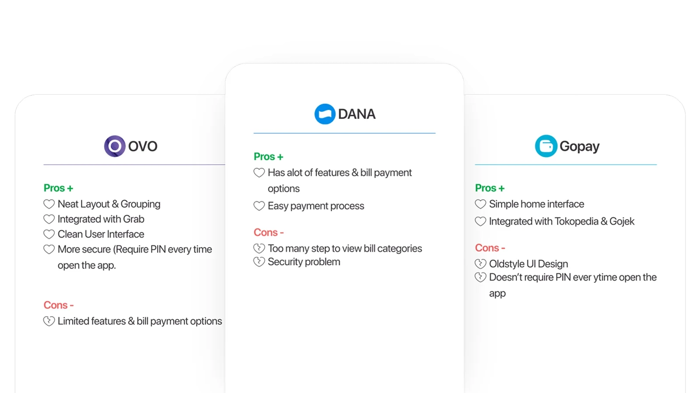
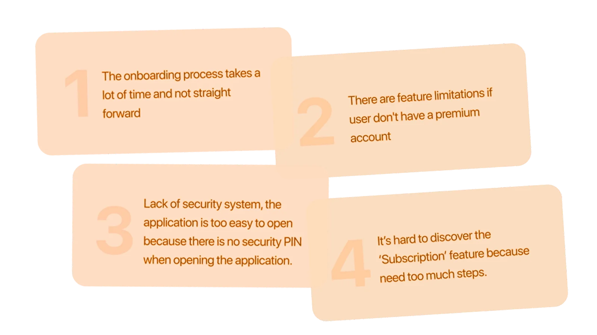
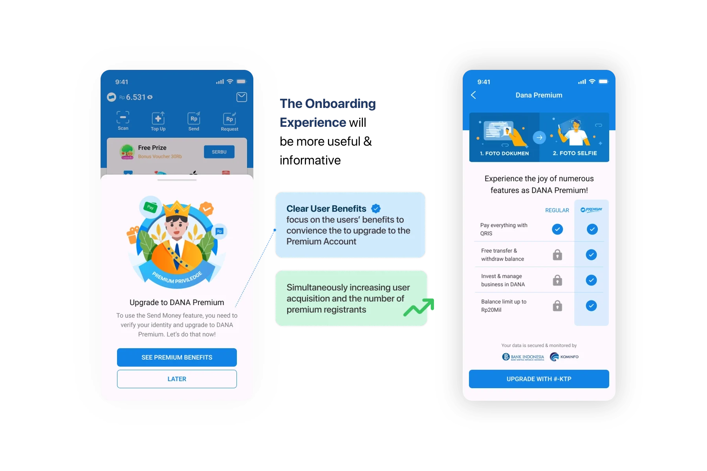
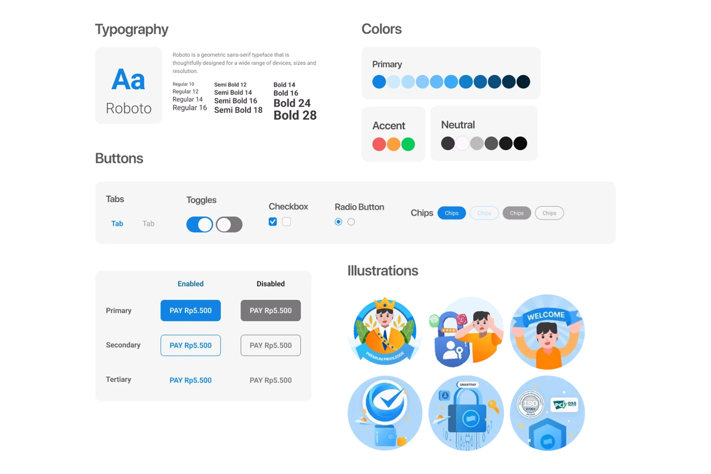
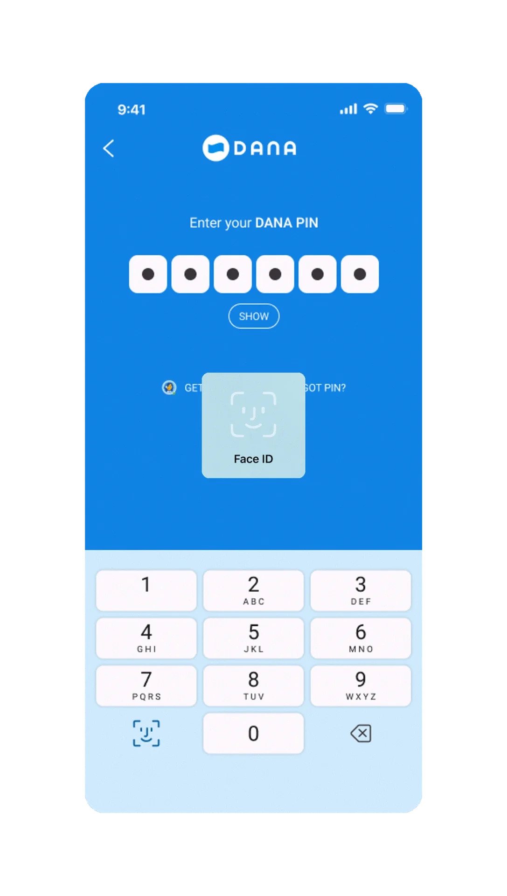
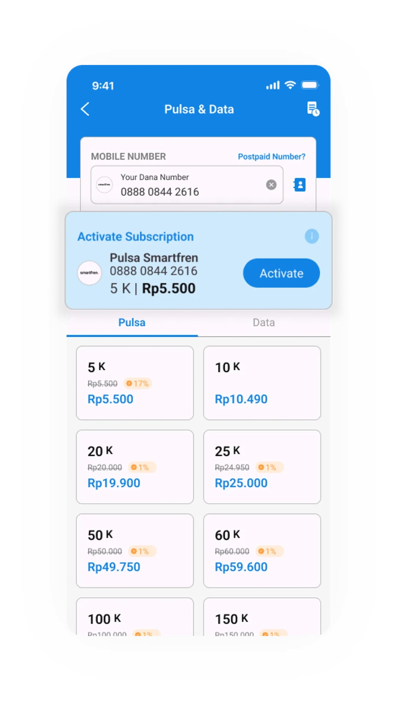

People need a clear starting point
When hierarchy or labels are ambiguous, people may not know which action moves the task forward.
Design focusClarify orientation
Refining interfaces through observation, feedback, and focused review
A practice-focused view of how I use usability testing, interface reviews, and feedback to identify friction, validate clarity, and improve product experiences.
This page describes my testing and iteration approach using generalized examples rather than a separate client project.
Start with what the interface expects people to understand and do.
A flow can look complete in a design file and still be unclear when someone has to use it without explanation.
Usability testing and interface reviews help reveal unclear hierarchy, missing feedback, unexpected interpretation, and unnecessary decision effort.
The goal is to find friction early and turn feedback into focused design changes.
I use testing as an input for iteration—not as a presentation exercise—so each observation needs to connect to a concrete design decision.
When hierarchy or labels are ambiguous, people may not know which action moves the task forward.
Users need confirmation when something succeeds, fails, changes state, becomes locked, or requires additional action.
Complex forms and business workflows are easier to use when information appears in a deliberate order instead of all at once.
Two common usage perspectives help frame what to observe during a review.
Needs stronger orientation, clearer terminology, and visible next steps when encountering a workflow for the first time.
Already understands the product and benefits from faster scanning, predictable states, and fewer repeated decisions.
Five practical steps from interface review to focused iteration.
Review the existing interface, task sequence, labels, hierarchy, feedback, and known problem areas before changing anything.

Choose the tasks or decisions where uncertainty is most likely and define what successful understanding should look like.

Map the intended path and note assumptions about what the user should notice, understand, and do at each step.

Create the minimum interface or prototype needed to test the change without introducing unrelated redesign work.

Observe where people pause, misread, backtrack, ask questions, or choose an unexpected action, then refine the interface around those signals.
Testing and interface reviews are used as directional input for iteration; they do not imply production performance or measured business impact.The outcome of testing is a clearer design decision, not a decorative research artifact.
Headings, grouping, labels, and action placement should make the current task understandable before the user reads every detail.
The interface should become easier to scan without removing information people need to make a decision.
Confirmation, validation, status, error, locked, pending, and success states should tell users what happened and what they can do next.
Clear feedback reduces the need to guess whether the system accepted an action.

Feedback should lead to focused changes in hierarchy, wording, interaction, or state—not a complete redesign when the rest of the flow already works.
When an entry point or label causes hesitation, the next iteration should clarify wording, placement, and the difference between primary and secondary actions.
Iteration continues until the interface communicates task, state, and consequence clearly enough to support confident use.

Testing is most useful when it changes a design decision.
During my Aarawan internship, I assisted with usability testing, interface reviews, and refinements based on feedback; this page summarizes that way of working.
Through this practice, I connect observations, user flows, interface decisions, and usability feedback into focused design iterations.The key lesson is to keep testing connected to a design decision: observe the friction, identify the cause, make a focused change, and review again.